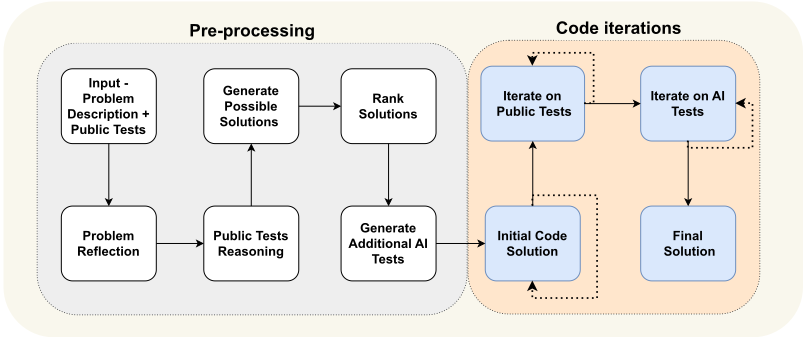
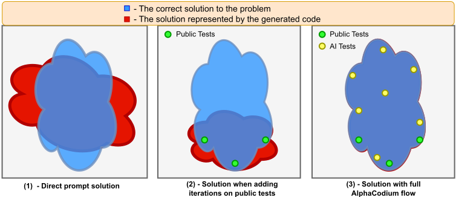
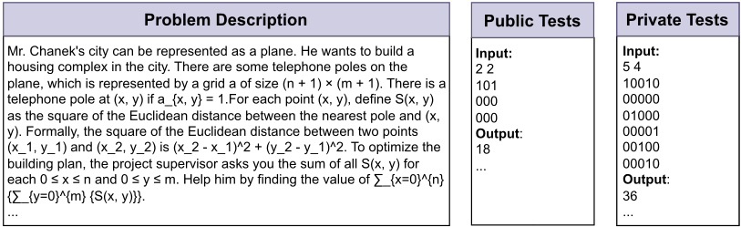
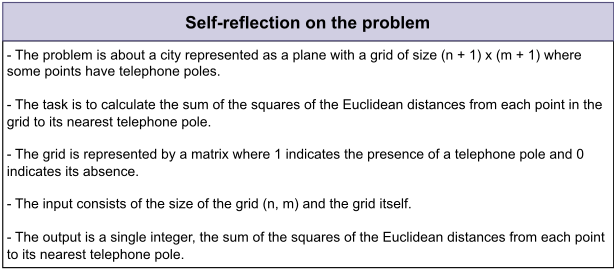
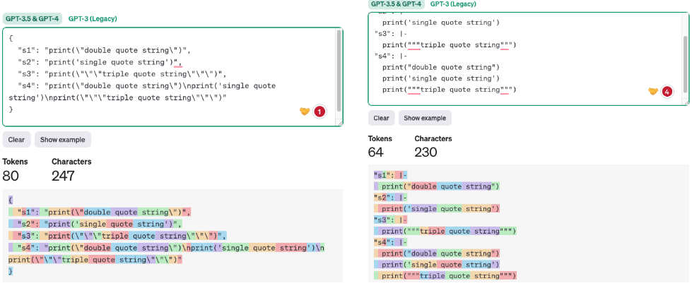

基于 AlphaCodium 的代码生成：从 Prompt Engineering 到 Flow Engineering
论文针对 LLM 在竞赛编程等真实代码任务上单条提示效果差的问题——模型难以理解冗长、细节繁多的题目描述，生成的代码常通过公开测试却无法泛化到私有测试——提出 AlphaCodium，一个基于测试、多阶段、面向代码的迭代式 flow。方法分两阶段：预处理阶段让模型以要点形式反思问题、解释公开测试的输入输出关系、生成并排序 2-3 个候选解法、并额外生成 6-8 个聚焦边缘情况的 AI 测试；迭代阶段生成初始代码后反复运行并依据报错修复，先通过公开测试，再借助 test anchors 通过 AI 测试。论文同时沉淀了 YAML 结构化输出、bullet points 语义推理、模块化代码、双重验证软决策、推迟不可逆决策等代码导向的提示设计原则。关键结论：GPT-4 在 CodeContests 验证集上 pass@5 从 19% 提升到 44%，并以比 AlphaCode 少四个数量级的 LLM 调用取得更优结果，且全程无需任何模型微调。
LLM 在真实代码生成问题（以 CodeContests 竞赛编程数据集为代表）上，单条提示优化甚至 chain-of-thought 提示都未能带来有意义的准确率提升：模型难以理解冗长且含大量细节与规则的题目描述，持续产出错误代码，或只能通过公开测试却无法泛化到未见过的私有测试。为自然语言任务优化的常见提示技术对代码任务效果有限，论文主张从 prompt engineering 转向面向代码的 flow engineering。
AlphaCodium 是 test-based、多阶段、代码导向的迭代 flow，分两个阶段：(1) 预处理：problem reflection（要点式描述问题目标/输入/输出/规则/约束）、public tests reasoning（解释每个测试输入为何导致该输出）、生成 2-3 个自然语言候选解法并按正确性/简洁性/鲁棒性排序、生成 6-8 个覆盖公开测试未及方面（大输入、边缘情况）的 AI 额外测试；(2) 迭代代码生成：生成初始代码后，先在公开测试上迭代 run-fix（运行、依据报错修复），再在 AI 测试上借助 test anchors 继续迭代（将已通过的测试作为锚点保护，并按易到难排序以尽早获得锚点）。配套设计原则：YAML 结构化输出（等价于 Pydantic 类定义，比 JSON 更适合含引号/特殊字符的代码，且 token 更少）、bullet points 语义推理、要求生成模块化小函数、双重验证的软决策（重新生成并修正而非直接问对错）、推迟不可逆决策保留探索空间。整个 flow 依赖知识积累：前序阶段的输出作为后续更难阶段的 prompt 输入，部分阶段可借结构化输出合并为单次 LLM 调用以节省资源。
GPT-4 在 CodeContests 验证集上 pass@5 从单条精心设计直接提示的 19% 提升到 44%（x2.3 提升）
AlphaCodium flow 对开源模型（DeepSeek）与闭源模型（GPT）、验证集与测试集均带来一致且显著的提升
相同模型（GPT-3.5）与相同指标（pass@5）下，AlphaCodium 一致优于 CodeChain
相比 AlphaCode，AlphaCodium 以少四个数量级的 LLM 调用取得更优结果：AlphaCodium 每个解约 15-20 次 LLM 调用（pass@5 提交约 100 次调用），而 AlphaCode 的 pass@10@100K 涉及约 1M 次调用
AlphaCode2 与 AlphaCodium 均比 AlphaCode 样本效率高约四个数量级，但 AlphaCode2 依赖针对 CodeContests 大量微调的 Gemini-Pro，而 AlphaCodium 直接使用通用模型、无需额外数据与昂贵训练
与 AlphaCode 依赖专门微调模型加海量暴力采样聚类（生成至多 1M 个解再挑选约 10 个提交）不同，AlphaCodium 不训练模型，仅通过面向代码的多阶段迭代 flow 提升通用 LLM 的表现；与 CodeChain 的子模块自修订链不同，其核心新意在于：(a) 用 AI 生成额外测试扩充公开测试并以此驱动迭代（基于'生成测试比生成正确解更容易'的关键观察）；(b) test anchors 机制处理错误 AI 测试；(c) 一套系统的代码导向提示设计原则（YAML 结构化输出、bullet points 分析、双重验证、模块化代码等）。论文还提出'从 prompt engineering 到 flow engineering'的范式转变，并开源了完整可复现的生成与评测脚本（此前 AlphaCode 与 CodeChain 均未开源）。
相关度级别：high
命中能力域：3.1 上下文工程与记忆 | 3.2 提示工程 | 3.3 Agent 架构与工具使用 | 3.5 评测与可靠使用
理由：论文直接命中团队多个核心能力域。(1) 3.2 提示工程：系统总结了可直接复用的代码任务提示设计原则——YAML 结构化输出优于 JSON、bullet points 语义推理、避免直接提问以防幻觉、双重验证软决策——并实证说明单条提示与 CoT 优化收益有限、应转向 flow 层面设计。(2) 3.3 Agent 架构与工具使用：run-fix 迭代循环（运行代码、读取报错、修复）是带执行反馈的 harness 设计范本，problem reflection 与候选解法生成/排序对应规划与反思，虽未用 Agent 一词但技术完全同构。(3) 3.5 评测与可靠使用：用含约 200 个私有测试的 CodeContests 做防误报评测、以直接提示为基线做对照、量化 LLM 调用成本，并开源可复现评测脚本，是 AI 辅助代码生成的实证研究代表。(4) 3.1 上下文工程：flow 的知识积累设计（前序阶段的结构化输出作为后续更难阶段的上下文输入）是结构化上下文组织的具体实践。团队构建代码生成、测试辅助工具时可直接借鉴其 flow 结构与提示原则。
建议动作：深入精读并做内部分享
arXiv:2401.08500v1 [cs.LG] 16 Jan 2024
Tal Ridnik, Dedy Kredo, Itamar Friedman CodiumAI
{ tal.r, dedy.k, itamar.f } @codium.ai
模型 [12] 已成功生成能够解决简单编程任务的代码 [2, 1]。然而，真实世界中的代码问题在本质上往往有所不同——它们更加微妙，并且可以由一段冗长的自然语言任务描述（即 spec）来定义，其中包含解决方案代码必须处理的诸多细节和规则。
CodeContests [8] 的推出——这是一个精选自 Codeforces [9] 等竞赛编程平台的数据集——使得在更具挑战性、通常包含冗长问题描述的代码问题上评估模型和流程成为可能。其私有测试集为每个问题提供了 200 多个未见过的测试用例，从而能够全面评估生成的代码，并将误报率降至最低。
针对 CodeContests 数据集的主要工作是 AlphaCode [8]——由 DeepMind 开发的一个代码生成系统，它利用了专门为竞赛编程任务微调的网络。AlphaCode 会生成数量极其庞大的候选解（最多达 100 万个），随后对这些解进行处理和聚类，并从中选出一小部分（约 10 个）进行提交。尽管 AlphaCode 的结果令人印象深刻，但既需要针对面向代码的任务专门微调模型，又存在沉重的类似暴力穷举式的计算负载，这使得它对大多数实际应用场景而言并不实用。CodeChain [7] 是另一项应对竞赛编程任务的工作，它引入了一种新颖的推理框架，通过基于子模块的自我修订链来改进大语言模型（LLM）中的代码生成。
在本文中，我们提出 AlphaCodium——一种面向代码的流程，它围绕一个迭代过程展开：在该过程中，我们针对输入-输出测试反复运行并修复生成的代码。AlphaCodium 流程的两个关键要素是：(a) 生成额外数据（例如问题反思和测试推理）以辅助迭代过程；(b) 利用额外的 AI 生成测试来扩充公开测试。图 1 描绘了所提出的流程，该流程分为两个主要阶段：预处理阶段，在此阶段我们以自然语言对问题进行推理；以及迭代代码生成阶段，在此阶段我们针对公开测试和 AI 生成测试来生成、运行并修复代码解决方案。
代码生成问题与常见的自然语言问题不同——它们要求匹配目标语言的精确语法，识别正常路径（happy path）与边界情况（edge case），关注问题规格说明中的大量细节，并处理其他代码特有的问题与需求。因此，许多在自然语言生成中行之有效的优化方法和技巧，对于代码任务可能并不有效。在本工作中，我们提出了一种新的大语言模型（LLM）代码生成方法，我们称之为 AlphaCodium——一种基于测试的、多阶段的、面向代码的迭代流程，可提升 LLM 在代码问题上的性能。我们在一个名为 CodeContests 的具有挑战性的代码生成数据集上测试了 AlphaCodium，该数据集包含来自 Codeforces 等平台的竞赛编程问题。所提出的流程持续且显著地改善了结果。例如，在验证集上，GPT-4 的准确率（pass@5）从使用单个精心设计的直接提示（prompt）时的 19% 提升到使用 AlphaCodium 流程时的 44%。我们相信，本工作中获得的许多原则和最佳实践可广泛适用于一般性的代码生成任务。
完整实现可在以下网址获取：https:// github.com/Codium-ai/AlphaCodium
With a sparse reward signal, code generation tasks require searching in the huge structured space of possible programs. Correct solutions to the same problem can look significantly different, and judging if a partial or incorrect solution is useful is a difficult challenge - a single-character edit can completely alter the solution's behavior. Due to the unique nature of code generation tasks, common prompting techniques that have been optimized for natural language tasks [4, 13, 10], may not be as effective when applied to code generation.
Recent large-scale transformer-based language mod- Akey observation when designing AlphaCodium flow is that generating additional useful tests is easier than generating a correct code solution. Adding specific tests requires mainly understanding the problem, some insight, and basic brute-force or logical reasoning. There is no need to fully 'solve' the problem when generating additional tests.
1


AlphaCodium flow also utilizes novel code-oriented design concepts, tricks, and best practices, such as: (1) YAML structured output; (2) bullet point analysis to encourage semantic reasoning; (3) generating modular code; (4) soft decisions with double validation; (5) encouraging exploration and postponing direct decisions; (6) test anchors.
AlphaCodium's flow, when compared against a welldesigned single prompt, consistently and significantly improves the performance of LLMs on CodeContests problems. This is true both for open-source models (DeepSeek [3]) and closed-source models (GPT [5]). For GPT-4 on the validation set, for example, the pass@5 accuracy improved from 19% to 44%. AlphaCodium also outperforms previous works, while having a significantly smaller computational budget - it achieves superior results over AlphaCode, for example, with four orders of magnitude fewer LLM calls.
We believe many of the principles and best practices used in this work broadly apply to general code generation tasks. In addition, we argue that utilizing harder and more complicated benchmarks like CodeContests dataset will allow the community to better evaluate LLMs, compared to more simplistic benchmarks, which are common today, like HumanEval [2].
2
CodeContests [8] 是由谷歌 DeepMind 推出的一个具有挑战性的代码生成数据集，其中的题目精选自 Codeforces [9] 等竞赛编程平台。该数据集包含 1 万道可用于训练大语言模型（LLM）的代码题目，以及用于评估 LLM 解决高难度代码问题能力的验证集和测试集。
在本工作中，我们没有训练专用模型，而是专注于开发一种面向代码的流程，该流程可应用于任何经过预训练、支持编码任务的 LLM，例如 GPT [5] 或 DeepSeek [3]。因此，我们选择忽略训练集，而专注于 CodeContests 的验证集和测试集，二者分别包含 107 道和 165 道题目。图 2(a) 展示了 CodeContests 数据集中一道典型题目的示例。每道题目由题目描述和公开测试用例组成，这些内容作为输入提供给模型。目标是生成一个代码解决方案，使其对任何（合法）输入都能产生正确的输出。私有测试集对模型和参赛者均不可见，用于评估所提交的代码解决方案。
与许多其他竞赛编程数据集 [6, 2] 不同，CodeContests 利用了一套全面的私有测试集来避免假阳性——每道题目包含 ∼ 200 个私有输入-输出测试，生成的代码解决方案必须通过这些测试。
大语言模型（LLM）通常不擅长关注细小的细节，因为它们往往将问题描述转换为某种“平均”的描述，与其训练时所基于的常见情形相似。相比之下，现实世界中的代码问题经常包含对其正确求解至关重要的细小细节。CodeContests 数据集的一个关键特征是，其题目描述在设计上就是复杂而冗长的，带有细小的细节和细微差别（典型描述见图 2(a)）。我们认为，增加问题理解这一自由度是有益的，因为它模拟了现实生活中的问题——这些问题通常很复杂，涉及多种因素和考量。这与更常见的代码数据集（如 HumanEval [2]）形成对比，在后者的数据集中，题目更容易，且以简洁的方式呈现。一个典型 HumanEval 题目的示例见附录 A。
图 2(b) 描绘了模型对图 2(a) 中所示问题的内省。注意，恰当的自我反思能使问题更加清晰、连贯。
这说明了问题理解作为流程一部分的重要性，该流程能够以较高的概率最终生成正确的代码解决方案。
由于代码生成问题本身的复杂性，我们观察到，单提示优化、甚至思维链（CoT）提示，都未能使大语言模型（LLM）在 CodeContests 上的准确率获得有意义的提升。模型难以理解并领会问题，持续生成错误的代码，或者生成虽通过了公开测试、却无法泛化到未见过的私有测试的代码。适用于自然语言任务的常见流程，对于代码生成任务而言可能并非最优——这类任务蕴含着尚未被开发的潜力：反复运行生成的代码，并对照已知示例对其进行验证。
我们没有采用自然语言处理（NLP）中常见的提示工程技术，而是发现，要解决 CodeContest 问题，更有益的做法是采用一种专门的、面向代码生成与测试的流程。该流程围绕一个迭代过程展开：反复运行生成的代码，并对照输入-输出测试对其进行修复（此类测试的示例见图 2(a)）。这一面向代码的流程有两个关键要素：(a) 在预处理阶段生成额外数据，例如自我反思和公开测试推理，以辅助该迭代过程；(b) 利用额外的 AI 生成测试对公开测试进行扩充。
在图 1(a) 中，我们展示了用于解决竞赛编程问题的 AlphaCodium 流程。该流程分为两个主要阶段：
在本节中，我们将回顾 AlphaCodium 流程（图 1(a)）中所使用的各个不同阶段：
问题反思（Problem reflection）：以要点形式描述问题，同时涵盖问题的目标、输入、输出、规则、约束条件以及问题描述中出现的其他相关细节。
3


公开测试推理（Public tests reasoning）：解释每个测试的输入为何会导出相应的输出。
生成可能解（Generate possible solutions）：生成一个由 2-3 个该问题的可能解组成的列表，并以自然语言加以描述。
解排序（Rank solutions）：从正确性、简洁性和鲁棒性的角度对各个可能解进行排序，并选出“最佳解”（不一定要选择“最高效”的解）。
生成额外 AI 测试（Generate additional AI tests）：为该问题额外生成 68 个多样化的输入-输出测试。尽量覆盖原始公开测试未曾覆盖的情形和方面。
初始代码解（Initial code solution）：该阶段的目标是为问题生成一个初始代码解。至关重要的是，这段代码必须合理地“接近”正确代码，从而使后续阶段中的运行-修复（run-fix）迭代有更大的成功机会。该阶段的流程：
在公开测试上迭代（Iterate on public tests）：从基础代码开始，在公开测试上对其进行迭代运行。如果代码在某个特定测试上失败，则根据错误信息尝试对其进行修复。
在 AI 生成测试上迭代（Iterate on AI-generated Tests）：在 AI 生成测试上继续进行运行-修复迭代。使用“测试锚点”（test anchors）（见第 4 节）。
| Private | Tests |
|---|---|
| Input: 5 4 10010 00000 01000 00001 00100 00010 Output : 36 ... |
| Private | Tests |
4
在本节中，我们将针对所提出的流程提供更多见解，并分享相关的直觉认识。
首先，该流程依赖于知识积累——尝试由易到难逐步推进，在此过程中不断积累知识与见解，以助力后续更困难的阶段。例如，第一步“问题反思”（problem reflection）的输出可以用作更困难步骤（如“生成可能解决方案”（generate possible solutions））的提示输入。预处理阶段的输出则被用于辅助最具挑战性、也最关键的阶段——代码迭代（code iterations），在这一阶段中，我们尝试生成能够正确解决问题的代码。
在设计 AlphaCodium 时的另一个关键观察是：对 AI 而言，生成更多测试要比生成完整的解决方案代码更容易。生成额外的测试主要需要理解问题，以及基本的暴力枚举（brute-force）或逻辑推理。无需完全“解决”问题，就能生成额外的有用输入-输出测试对。这与生成正确的解决方案代码形成对比——后者需要完整的算法解决方案，相当于正确求解任何可能的输入-输出测试对。因此，我们可以生成更多的 AI 测试，然后利用它们来改进代码创建阶段，如图 1(b) 所示。我们进一步放大了这些额外测试的贡献，其方法是要求模型关注原始公开测试未曾涉及的方面，例如大规模输入、边界情况（edge cases）等。
另外需要注意的是，某些步骤可以合并为单次 LLM 调用，图 2(a) 所示的流程是一个概念性流程，强调的是该过程的高层步骤。在实践中，结构化输出（structured output）（见第 4 节）使得可以将多个阶段合并为单次 LLM 调用，以节省资源，或者是因为模型在并发执行特定任务时表现更好。
对测试锚点的另一项优化是将 AI 生成的测试按从易到难的顺序排序。这样一来，迭代过程更有可能在过程初期就获得锚点，而这些锚点在后续迭代更复杂的 AI 测试时可以起到保护作用。
对我们无效的方法：在附录 C 中，我们介绍了我们尝试过的其他技巧和方法，但它们并未带来效果的提升。
在表 1 中，我们将 AlphaCodium 的结果与使用单个精心设计的直接提示所获得的结果进行了比较。所使用的指标为 pass@k，其定义为：对每个问题使用 k 个生成的解时，被解决的问题所占的百分比。可以看出，AlphaCodium 流程持续且显著地提升了 LLM 在 CodeContests 问题上的性能。无论对于开源（DeepSeek）还是闭源（GPT）模型，也无论对于验证集还是测试集，这一结论均成立。例如，对于验证集上的 GPT-4，pass@5 分数从 19% 提升至 44%，实现了 2.3 倍的提升。
6
| 0 | 1 | 2 | 3 |
|---|---|---|---|
| model | set | method | score (pass@5) |
| DeepSeek -33B [3] | validation | Direct AlphaCodium | 7% 20% |
| DeepSeek -33B [3] | test | Direct prompt AlphaCodium | 12% 24% |
| GPT-3.5 | validation | Direct prompt AlphaCodium | 15% 25% |
| GPT-3.5 | test | Direct prompt AlphaCodium | 8% 17% |
| GPT-4 | validation | Direct prompt AlphaCodium | 19% 44% |
| GPT-4 | test | Direct prompt AlphaCodium | 12% 29% |
| 0 | 1 | 2 | 3 |
在表 2 中，我们将 AlphaCodium 的结果与文献中的其他方法进行了比较。可以看出，当在相同模型（GPT-3.5）和相同指标（pass@5）下将 AlphaCodium 与 CodeChain 进行比较时，AlphaCodium 始终表现更好。
在将 AlphaCodium 与 AlphaCode 工作进行比较时，我们需要考虑到 AlphaCode 采用了一种不同的生成方法——专门针对代码问题微调某个（未知的）模型，生成数量极其庞大的代码解，对这些解进行聚类，然后从排名靠前的簇中提交 K 个解。例如，pass@10@100K 意味着生成了 100K（！）个解并对其进行聚类，最终选出 10 个解并提交。AlphaCode 使用了微调后的模型，并采用了类似暴力穷举的方法，其 LLM 调用次数显著更多。然而，AlphaCodium 所取得的最佳结果更好。
需要注意的是，AlphaCode 和 CodeChain 的论文 [8, 7] 均未发布针对 CodeContests 的可复现开源方案，包括端到端的生成与评估脚本。在评估结果时存在一些微妙之处。例如——如何处理具有多个解的问题，如何应对容差问题、超时问题，等等。我们与论文中报告的数字进行比较，但同时发布了 AlphaCodium 的完整可复现代码和评估脚本，以使未来的比较更加可靠和一致。
| model | set | method | score |
|---|---|---|---|
| GPT-3.5 | validation | AlphaCodium (pass@5) | 25% |
| GPT-3.5 | CodeChain (pass@5) | 17% | |
| GPT-3.5 | test | AlphaCodium (pass@5) | 17% |
| GPT-3.5 | CodeChain (pass@5) | 14% | |
| GPT-4 | AlphaCodium (pass@5) | 44% | |
| AlphaCode | validation | AlphaCode (pass@10@1K) | 17% |
| AlphaCode (pass@10@100K) | 24% | ||
| GPT-4 | test | AlphaCodium (pass@5) | 29% |
| AlphaCode | AlphaCode (pass@10@1K) AlphaCode (pass@10@100K) | 16% 28% |
| model | set | method | score |
使用 AlphaCodium 流程，我们为每个解执行约 15-20 次 LLM 调用，因此一次 pass@5 提交涉及约 100 次 LLM 调用。
AlphaCode 未报告每次运行执行了多少次 LLM 调用 [8]。假设每次运行只进行一次调用（未知，可能更多），那么一次 pass@10@100K（即十次提交，从 100,000 个生成的解中精选而来）就涉及 100 万次 LLM 调用，比 AlphaCodium 多出四个数量级。然而，AlphaCodium 所获得的最佳结果反而更好。
最近，一项名为 AlphaCode2 [11] 的新工作发表，其中对 Gemini-Pro 模型进行了微调，并在代码编程问题上进行了评估。该论文也报告了在 CodeContests 基准测试上的结果，但是在一个未向公众发布的更新变体上。根据 AlphaCode2 的报告："AlphaCode2 只需约 100 个样本即可达到 AlphaCode 使用一百万个样本所能达到的性能水平，使其样本效率高出 10000 倍以上。" 因此，就 LLM 调用次数而言，AlphaCode2 和 AlphaCodium 都比 AlphaCode 高效四个数量级。但是，AlphaCode2 使用的是一个专门针对 CodeContests 竞赛进行了大量微调的现代基础模型（Gemini-Pro），而 AlphaCodium 则按原样使用通用模型，并在无需额外数据和昂贵训练阶段的情况下提升了它们的性能。
7
在本文中，我们介绍了 AlphaCodium，这是一种面向代码的流程，它针对输入-输出测试迭代地运行并修复生成的代码。该流程分为两个主要阶段：预处理阶段，AlphaCodium 在此阶段用自然语言对问题进行推理；以及代码迭代阶段，AlphaCodium 在此阶段针对公开测试和 AI 生成的测试进行迭代。
AlphaCodium 还利用了我们发现的、对代码生成有益的其他设计概念、技巧和最佳实践：YAML 格式的结构化输出、生成模块化代码、通过要点分析进行语义推理、带双重验证的软决策、鼓励探索，以及测试锚点。
我们在一个名为 CodeContests 的具有挑战性的代码生成数据集上测试了 AlphaCodium。所提出的流程持续且显著地提升了各种闭源和开源模型的结果。AlphaCodium 还优于文献中的先前工作，同时计算预算显著更小。
/* 检查给定的数字向量中，是否存在任意两个数字彼此之间的距离小于给定阈值。>>> has_close_elements({1.0, 2.0, 3.0}, 0.5) false >>> has_close_elements({1.0, 2.8, 3.0, 4.0, 5.0, 2.0}, 0.3) true */ #include<stdio.h> #include<vector> #include<math.h> using namespace std; bool has_close_elements(vector<float> numbers, float threshold){
尽管较新的 GPT 版本¹ 原生支持 JSON 风格的输出，但我们认为，对于代码生成而言，YAML 输出要好得多。为什么？因为生成的代码通常包含单引号、双引号、特殊字符等。大语言模型（LLM）很难将这些字符合法地置于 JSON 格式之中，因为 JSON 输出需要用起始的双引号包围起来（见图 4 (a)）。相比之下，采用块标量（block scalar）² 的 YAML 输出只需遵守缩进规则即可。任何具有正确缩进的文本或代码都是合法的（见图 4 (b)）。
此外，如图 4 所示，由于 YAML 格式不需要花括号、引号或转义字符，其输出所包含的 token 数量比 JSON 更少，从而降低了成本和推理时间，并带来质量的提升，因为模型需要关注的非必要 token 更少。

(a) JSON 输出下的 token 计数
(b) YAML 输出下的 token 计数
1 https://platform.openai.com/docs/guides/text-generation/json-mode
2 https://yaml-multiline.info/
9
当我们针对一个输入测试运行解答代码时，代码会生成一个输出。我们将该输出与期望输出进行比较，最终得到一个布尔值答案：通过（pass）或失败（failed）。然而，尝试以某种方式估计生成输出与正确输出之间的距离也是有益的。为此，我们采用了以下逻辑：
这一方法使我们能够在 CodeContests 上得出每个生成输出与正确输出之间的距离。